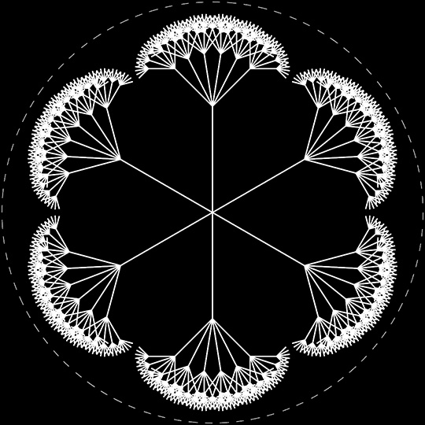
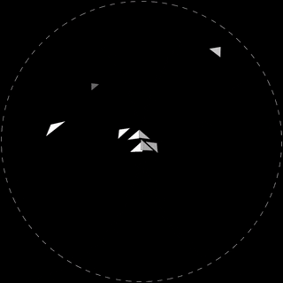

Ren Yuan is an artist, designer, and programmer. His areas of interest include complexity science, computer graphics, and machine learning. His works are primarily based on theories of art and technology. He creates systems through computer programming, explores the complexity and diversity of the system using different algorithms, mapping rules, and inputs, and outputs multisensory experiences at the system perception level, thereby establishing a new perspective and understanding of the system.
Data Sonification

Data Visualization

Generative AI